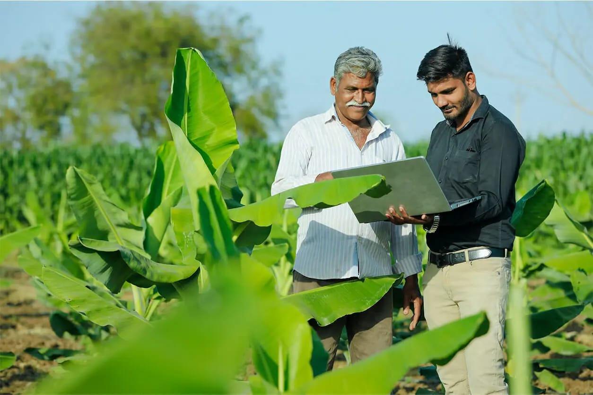
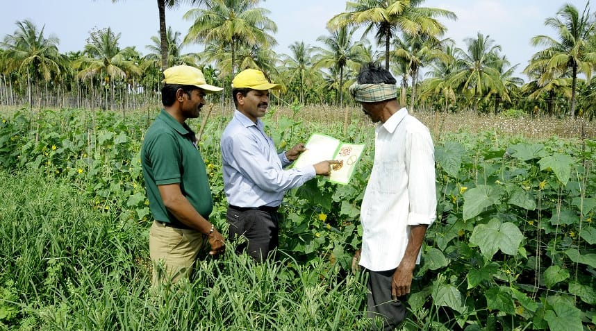

Life on the farm can be rewarding, but it also comes with its own set of challenges. That's why we created Rooted Together, a vibrant online community where farmers can connect, share knowledge, and support each other. From exchanging tips on sustainable practices to navigating market fluctuations, our platform fosters a network of collaboration and encouragement. No matter your experience level or farming focus, you'll find a welcoming space to ask questions, find solutions, and learn from fellow farmers just like you. Join us today and discover the power of a connected and supportive farming community!